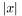

Notational conventions
Throughout this reference documentation we use some notational conventions designed to keep the documentation concise yet understandable. Please read the following carefully.Array notation
We allow ourselves to refer to the -th element of an array
-th element of an array  by
by  . The size of an array (either provided by a member function
. The size of an array (either provided by a member function size() or clear from context) is denoted .The home space
Many functions and member functions take an argument home of typeSpace*. The home space serves as manager to many operations used by variables, views, propagators, spaces, and so on. It provides services such as failure management, propagation control, memory management, and so on. To keep the documentation concise the home space is not documented for functions and member functions.Sharing in update and copy
In member functions that either copy or update an object during cloning, an argument share of typebool is available. This Boolean value controls whether during cloning the data structure at hand will be shared among the newly created cloned space and the original or whether two independent copies are created. Some functions (such as copy for spaces (Gecode::Space) or copy for propagators (Gecode::Propagator) also feature this argument. Here it is used to pass on the Boolean value to other datastructures used inside spaces or propagators.The actual value the share argument has is defined by the search engine: when a search engine uses the clone member function of a space it decides whether sharing is to be used in the cloning of the space or not. If the search engine is single-threaded, it will use full sharing (share will be true). Only if the search engine uses concurrency or parallelism with more than a single thread, it will pass false as value. This means that by not sharing data structures among spaces which are to be used in different threads, all parts of Gecode but the actual search engine do not need to provide concurrency control.
As examples for data structures which are sensitive to sharing, consider Gecode::SharedArray, Gecode::IntSet, and Gecode::DFA.